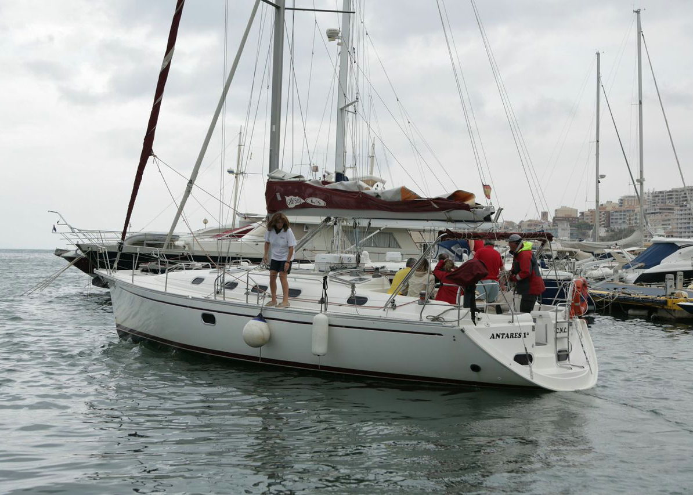
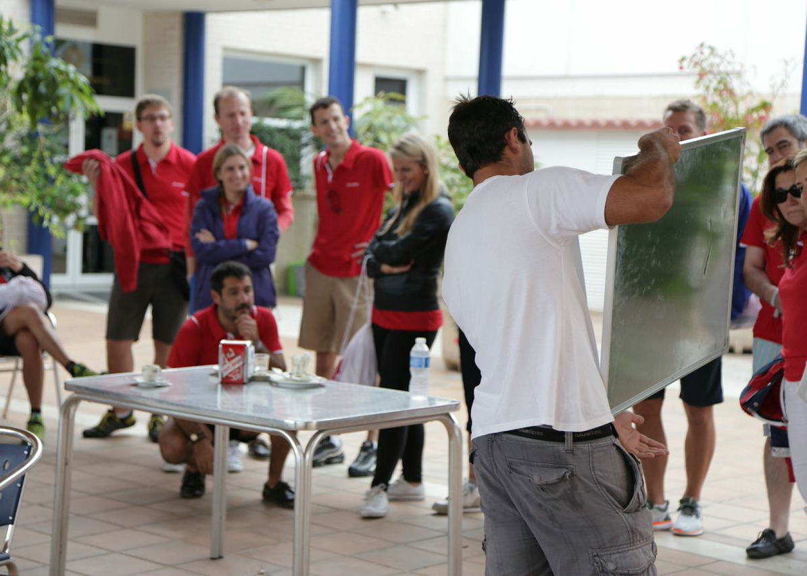

 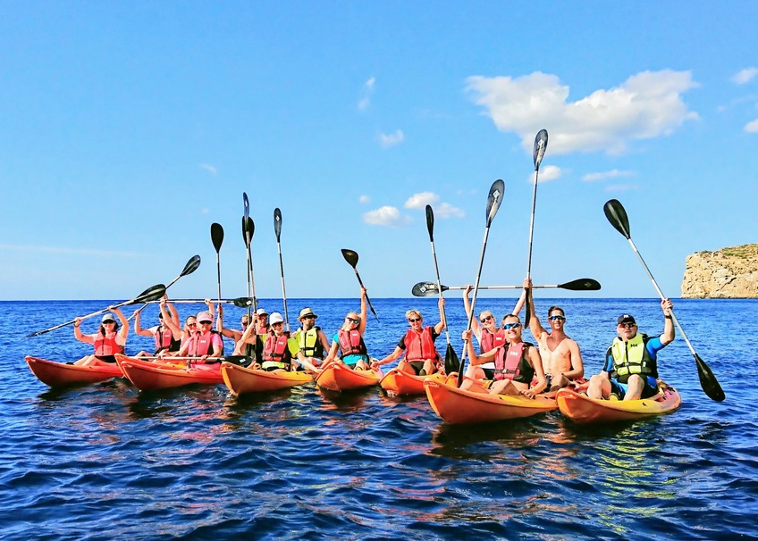
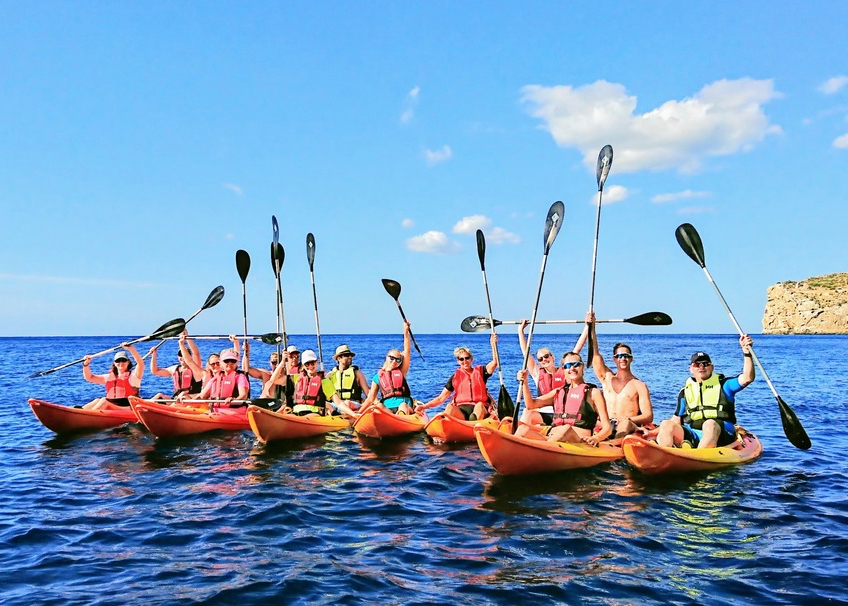
 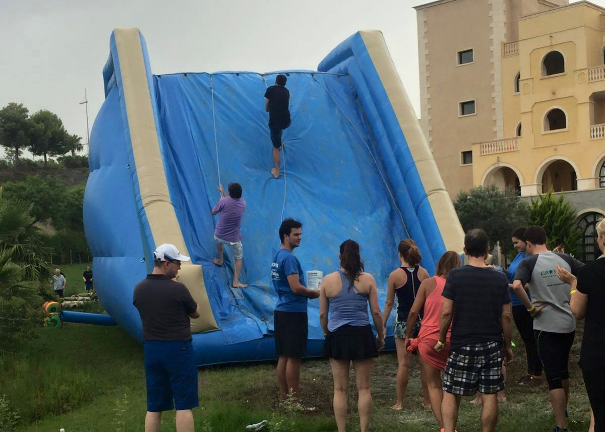
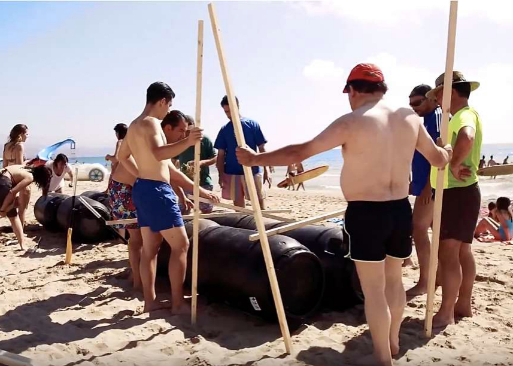
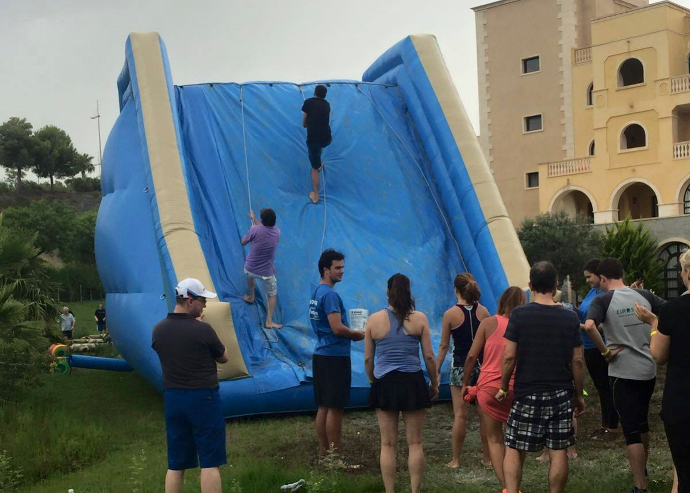
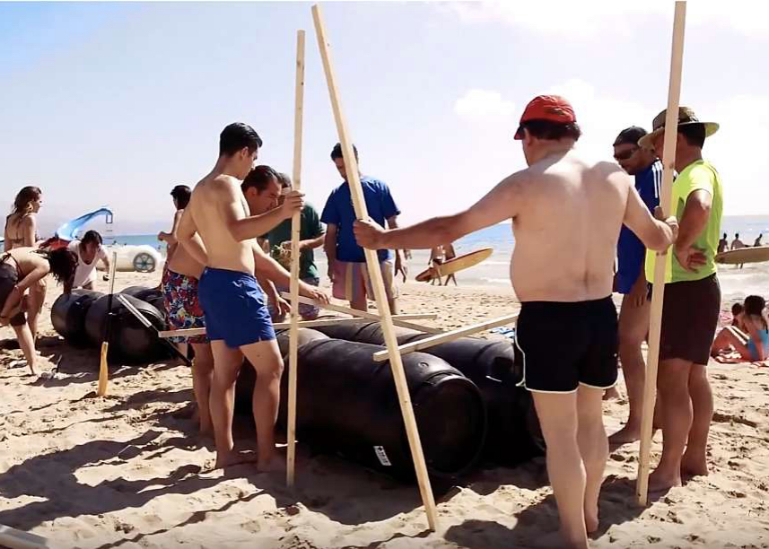
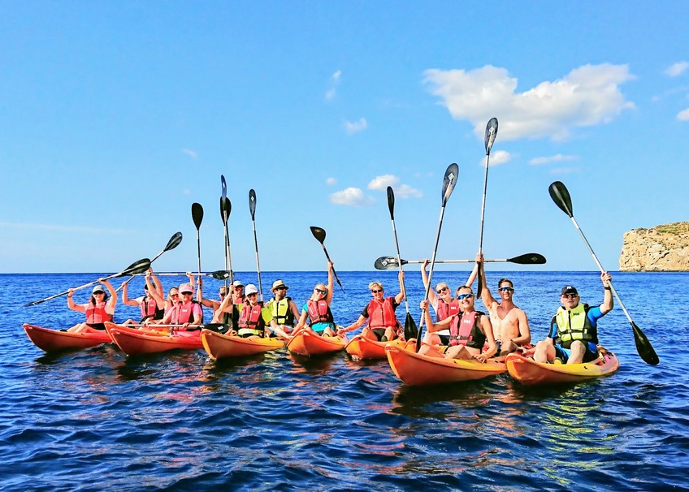
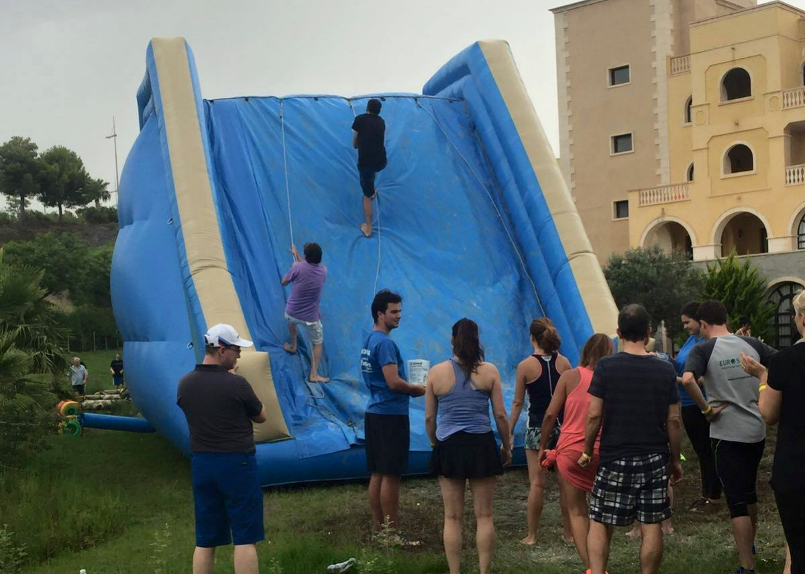
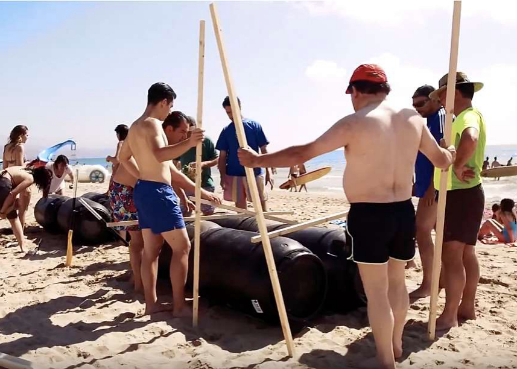
Alicante area offer a lot of possibilities to organize different kind of activities. Sea activities for the whole group as a corporate regatta or a relaxed catamaran sailing or sportive activities for small groups as kayak, paddle surf, jet ski. Another possibility would be beach activities as Beach volley tournament or beach games
Of course we can organize gastronomic activities as Paella contest, wine tasting, tapas workshop.
As the mountains are very near to the beach in all this area, we can organize hiking or btt excursions too.
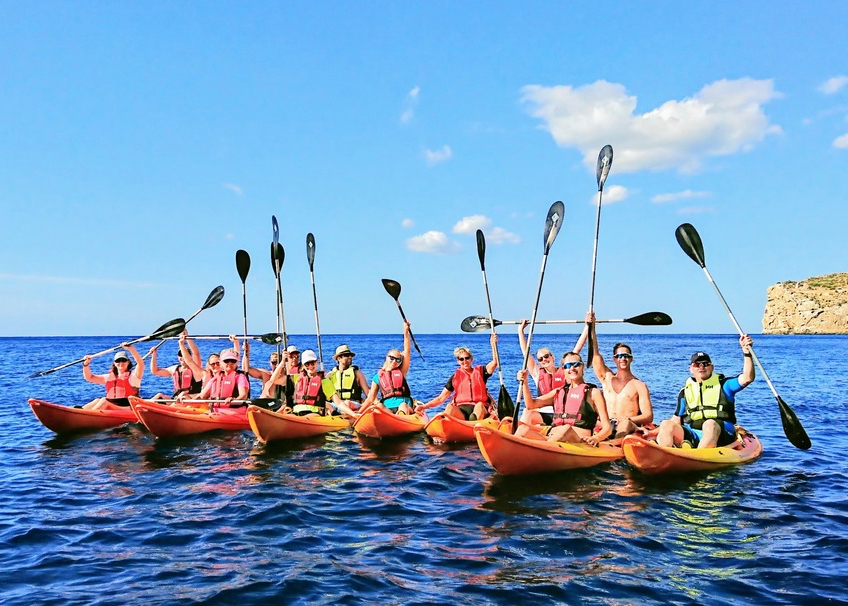
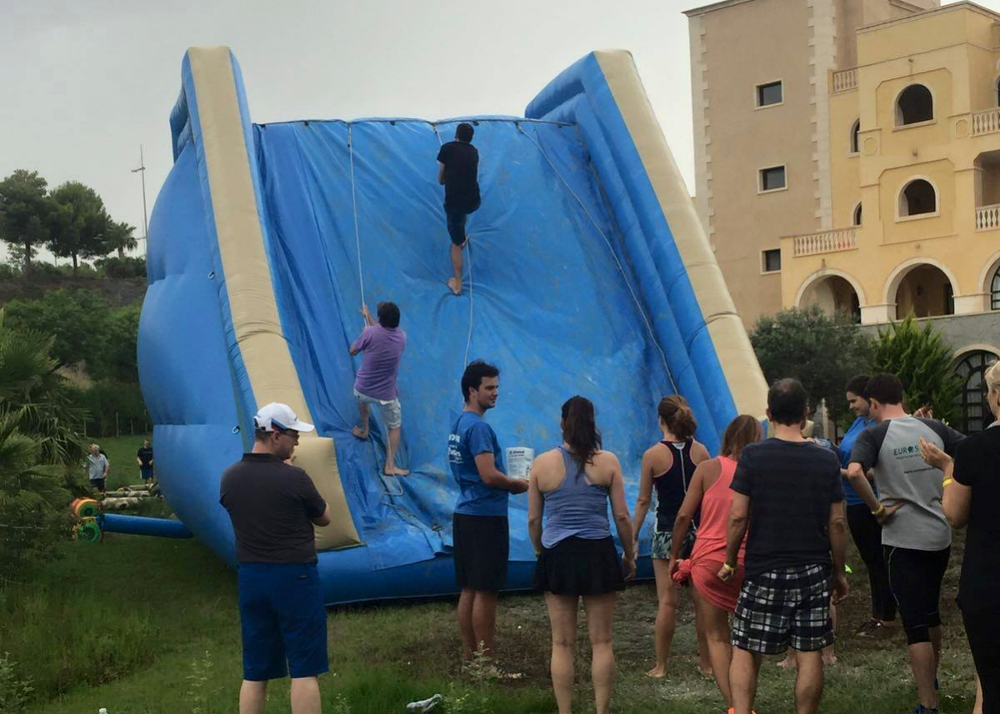
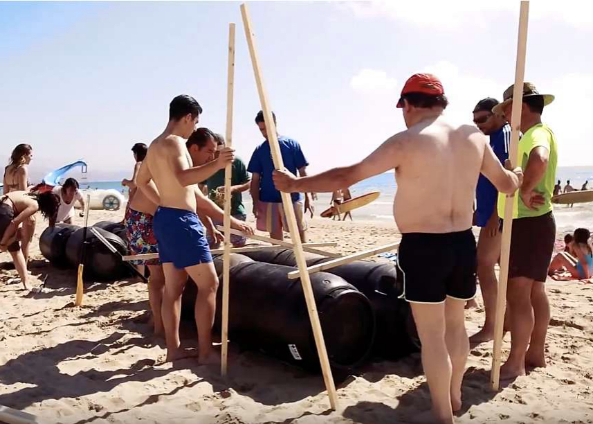